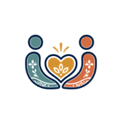
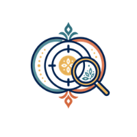
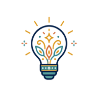
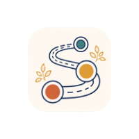
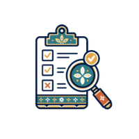
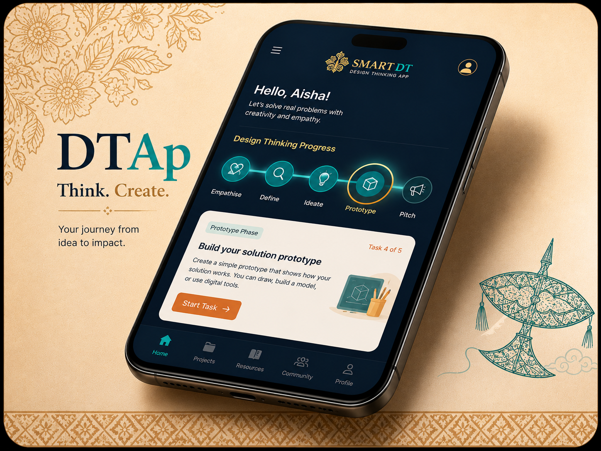
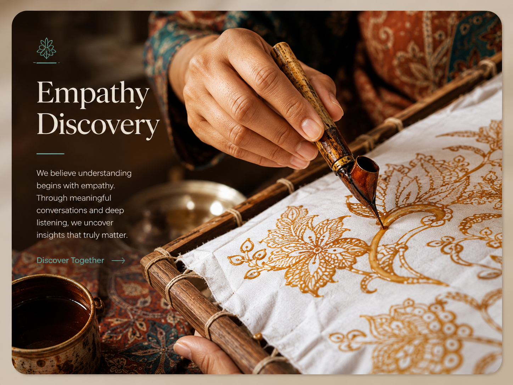
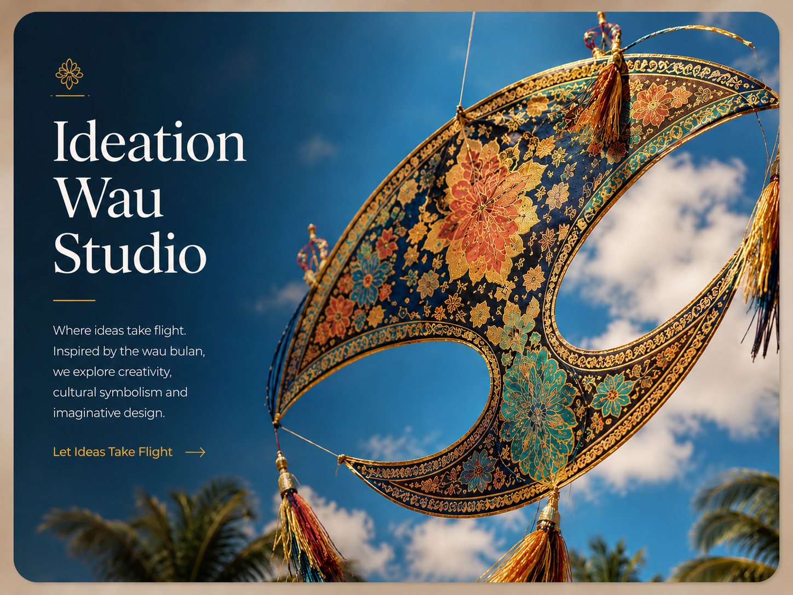
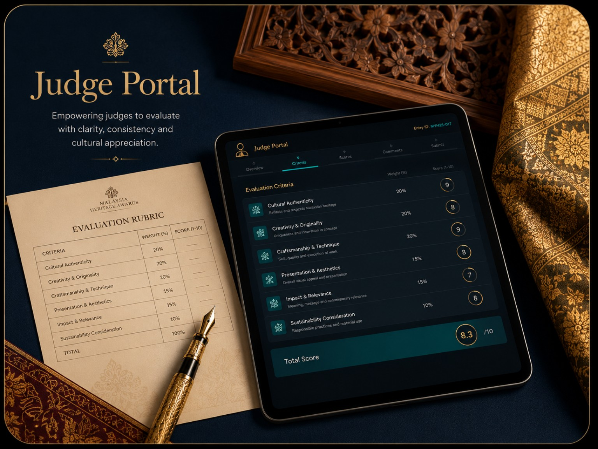

10 Teams
Group-based Design Thinking challenge with 6 participants per team.
AI-Powered Design Thinking for Cultural Heritage
A creative national experience for Politeknik Malaysia students to explore heritage, innovate with purpose, and shape meaningful solutions through Design Thinking.

Programme Dashboard
Quick access to the key information participants, trainers, judges and organisers need throughout the programme.
Group-based Design Thinking challenge with 6 participants per team.
Empathise, Define, Ideate, Prototype and Test.
AI-powered cultural heritage solutions prepared for pitching and gallery walk.
Participant guide, updates, resources, Smart DT support and team board.
Participant Hub
Participants will use the website to check the team allocation board, confirm with friends, read key reminders, access resources and proceed to Smart DT App tasks.
Reminder: Please check your name, confirm with your team members, and proceed with your Smart DT App tasks.
Participant Journey
Confirm participation and join the official update channel.
Find your assigned team and confirm with friends.
Join craft gallery tour, motif exploration and artisan interview.
Use Smart DT App to submit guided phase activities.
Present your AI-powered heritage innovation project.
CAMP21 Design Thinking
Camp21 uses Design Thinking to help students transform cultural observations into meaningful ideas, prototypes and sustainable heritage solutions.
Explore DT Journey →
Understand users and cultural context.

Frame the right challenge clearly.

Generate creative AI-supported ideas.

Build, visualise and improve concepts.

Validate, learn and refine.
SDG Impact
Camp21 integrates communication, AI, Design Thinking and cultural heritage preservation through selected Sustainable Development Goals.
Future-ready learning through communication, creativity and AI literacy.
Preserving and promoting cultural heritage in meaningful ways.
Encouraging sustainable design, materials and cultural responsibility.




Ready to begin?
Register, join the update channel, check your team and prepare for the full Design Thinking journey.